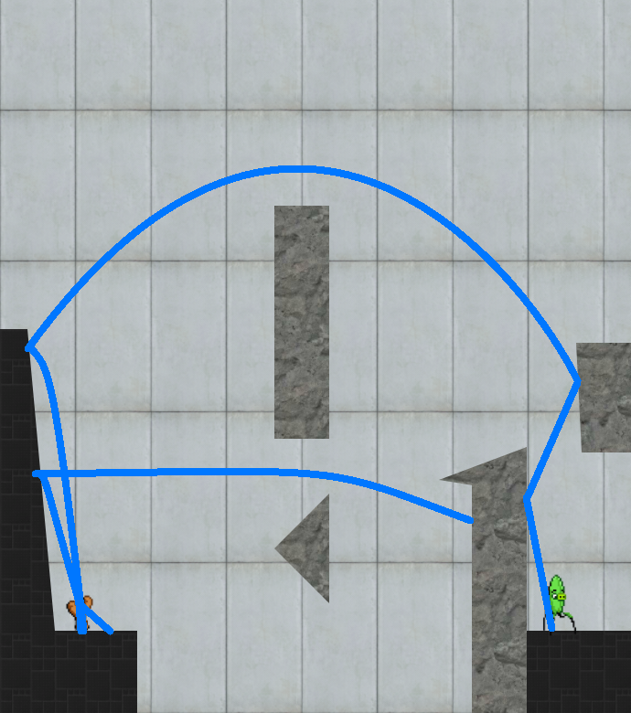
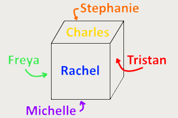
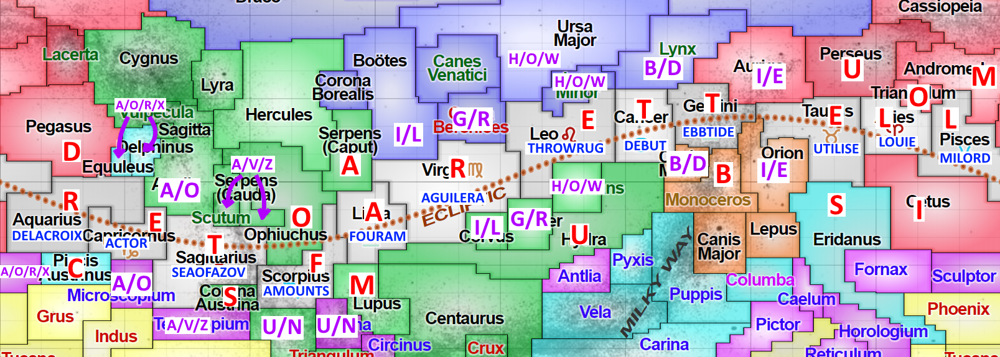
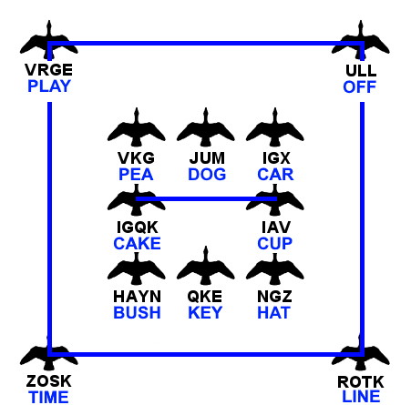

Solution: Overtime
Answer: SYNTONIC COMMA
Written by Josh Alman and Nathan Pinsker
The visual formatting of this page and the flavor text’s mention of a “Puzzleball tournament” steers us towards the 2017 Galactic Puzzle Hunt. We quickly notice that each section of the puzzle looks a lot like one of the puzzles from the 2017 hunt, and in fact, each borrows the flavor and mechanics from one of the old puzzles. For each, if we follow the solution to the old puzzle on these new instances of the puzzles, we extract a single letter, as follows.
The word clued by the phrase is CAPITAL. The original puzzle assigned each word a digit in pi, and there is a “.” immediately preceding this clue, which suggests that this clue would be assigned the digit 1. Thus, we take the first letter of CAPITAL, which is C.
#2: Angry Portals
The solution to the level looks like this: The path of the birds for this level forms an A.
#3: Learn to Play
The word “salve” uses the 2018 Galactic hunt visual style, suggesting that it references either the FAQ or the Rules page from 2018. It matches the position of the word “solve” on the 2018 FAQ page, which gives us the letter O.
#4: Identities
The number on the timeline is approximately 2100; some Google searching will yield that it corresponds to the album 2112, the producer of which was Terry Brown. This gives us the letter T.
#5: Zero Space
The answer to the cryptic clue is ALGORITHM, “a problem's solution”. “Goal's lost” clues an anagram of GOAL, which is ALGO; “heard a pulse” is a homophone of RHYTHM, or RITHM. The wordplay half is composed of the first 5 words in the clue, and the definition half is the last 3 words, so the “space” corresponds to the letter I.
#6: What Do You Do?
The character in the clue is Ace, from Doctor Who, and the company is Acer, an electronics manufacturer. Thus the letter given is A.The participants in this logic puzzle are living on a cube. This is the only possible arrangement (except for rotations), where a colored name represents the color of the house that the person lives in: 
| Person | Color | Fruit | Number |
|---|---|---|---|
| Charles | Yellow | Tomatoes | 2 |
| Tristan | Red | Apples | 5 |
| Rachel | Blue | Strawberries | 1 |
| Michelle | Purple | Pumpkins | 6 |
| Freya | Green | Oranges | 3 |
| Stephanie | Orange | Kiwis | 7 |
There are 10 roses, ordered from left-to-right as red, yellow, green, purple, green, red, red, green, blue, purple. As in the original puzzle, each rose corresponds to a letter: we take the number of fruit that the person in that color house has, and use that to index in the person's name. This yields the phrase “THE LETTER L”, or L.
At 1:56 into the 2017 One Shining Moment video, we can see Josh Perkins of Gonzaga run across the court for a dunk as someone sweeping the court has to quickly get out of the way. The music note tells us to take the 11th letter of his name, which is S.
#9: Television
The Eurovision song that corresponds to the picture is Ilinca’s “Yodel It!”, Romania’s entry in the 2017 contest. The accented note is the sixth note of seven in the chorus of the song, so the clued letter is the sixth letter of ROMANIA, which is I.
#10: X-ray Fish
The music playing in the background of the puzzle is our favorite Rock Lobster bassline! The singer is also singing “Bakin’ in the sun”, the lyrics which are used to describe the sound of “Bakin’ potatoes” in the song. Since there are two bakin’ potatoes in the original X-ray Fish video (this is also mentioned in the X-ray fish solution), we take the second letter of BAKIN’ POTATOES, which is A. (To help us out here, the solution to the original X-ray Fish puzzle actually confirms that they are called BAKIN’ POTATOES, and that there are two of them, in the “Other Visitors” section).There are twelve given clues, which correspond to the twelve constellations of the Zodiac. Their answers are as follows:
| Clue | Answer | Constellation |
|---|---|---|
| Role-player on stage or in a movie (5) | ACTOR | Capricornus |
| Singer Christina of “Genie in a Bottle” (8) | AGUILERA | Virgo |
| “That’s what real love _______ to—letting a person be what he really is.” (7) | AMOUNTS | Scorpius |
| Perform in a role for the first time, or the performance itself (5) | DEBUT | Cancer |
| Maiden name of Leopold II’s best-known mistress (9) | DELACROIX | Aquarius |
| Period of time when water is receding, or a 1953 song (3 4) | EBB TIDE | Gemini |
| Eight hours before noon (4 2) | FOUR AM | Libra |
| When repeated, a song popularized by The Kingsmen (5) | LOUIE | Aries |
| An archaic way to refer to an upper-class citizen, or a song by Edith Piaf (6) | MILORD | Pisces |
| Body of water on one end of the Kerch Strait (3 2 4) | SEA OF AZOV | Sagittarius |
| A small, decorative carpet that can be easily moved (5 3) | THROW RUG | Leo |
| To make effective use of, in Britain (7) | UTILISE | Taurus |
As in the original puzzle, letters must be assigned to constellations such that the neighbors of each Zodiac symbol spell out one of the twelve words above. However, only the answers corresponding to the Zodiac constellations are given! Given only these constraints, there are two possible assignments of letters to the Zodiac constellations. The hint given at the bottom disambiguates the two. A complete map of the solution is given below:
Reading across the star map gives the phrase “LETTER AFTER L”, which is M.
The answer to the clue is from the original puzzle: Target ($17,000,000). Dunnhumby is a data analytics company that helps other firms “target” customers or other areas of the market, and dart-throwers aim at targets. The clued letter is therefore D.
#13: Watchers and Fliers
The symbols have a Caesar shift of 6. Connecting all words to form valid compound words yields the following shape:  This is the DRY FLAT laundry symbol. We take the 6th letter of DRY FLAT, which is A.The phrase “fill the stage with penthouse pets” is spoken by Sir Robin, in “You Won’t Succeed on Broadway”. The word “bravery” points towards the Bravery skill of the Fighter class in Pathfinder. The clued letter is the seventh letter of “SIR ROBIN”, which is I.
#15: A Basic Puzzle
The given number, which is given in base 10, equals 200520180104050309130102 in base 14. This is an encoding of TETRADECIMAB, where the encoding scheme is to break the number into pairs of digits from 0-9, which give numbers from 01 to 26 and hence correspond to letters from A to Z. If we increment the number by 14, then we get 200520180104050309130112 in base 14. This encodes TETRADECIMAL, which is the name of base 14 (the real puzzle had a cycle of numbers referring to each other’s bases, but since we have only one number, it refers to its own base). Since we incremented by 14, the clued letter is the 14th letter of the alphabet, N.
#16: Stephen’s Speed Run
The shortest solution to the puzzle is 44 moves, achievable as follows:- RRDDD LLULR RUUUU RRDRL UDRDD DRLDL LURRR UUUUR LLUD
The source code for the puzzle gives us an offset of +35. Adding 44 to 35 gives 79, which is the ASCII code for the letter O.
#17: YOLO Queue
Since our cycle of champions only has one champion in it, we know that the Q ability being referenced must be the Q ability of Zilean, which is called “Time Bomb.” Meanwhile, the chat message refers to a “Mime Bomb.” Since the T in the original ability name becomes an M, the clued letter is M.
#18: Thunk!
The given box has a “torrential” pattern on it, meaning that mirrors reverse their orientation immediately after being hit by a ball. The original orientation of the mirrors in the box is as follows:Box 1: /\. \/\ \.\
We can examine the box to find the following message: “Let’s sing the alphabet: A, B, C, D, E...” The 7th “word” of this 9-word message is C.
| Puzzle | Letter | Seed |
|---|---|---|
| Puzzle of the Day | C | 11 |
| Angry Portals | A | 21 |
| Learn to Play | O | 6 |
| Identities | T | 4 |
| Zero Space | I | 20 |
| What Do You Do? | A | 18 |
| Very Fun Logic Puzzle | L | 19 |
| A Glistening Occasion | S | 22 |
| Television | I | 8 |
| X-ray Fish | A | 3 |
| Scramble for the Stars | M | 15 |
| Famous by Association | D | 1 |
| Watchers and Fliers | A | 17 |
| The Treasure of Apollo | I | 2 |
| A Basic Puzzle | N | 7 |
| Stephen's Speed Run | O | 13 |
| YOLO Queue | M | 14 |
| Thunk! | C | 9 |
The puzzles above are given in the order that the respective puzzles were released in the 2017 hunt. However, the flavor text points us towards ordering “from best to worst”. We can order the letters by their respective puzzles' seeds in The Final Bracket instead, to give us the cluephrase “DIATONIC COMMA ALIAS”. This clues the answer SYNTONIC COMMA.
Author’s Notes
Our first idea for this puzzle was “Let’s reuse the Rock Lobster video!” Coming up with the cluephrase was actually a bit challenging: in addition to accommodating puzzles like X-Ray Fish and Famous by Association (with few choices for valid letters), we wanted to opt for a longer cluephrase (so we could include as many puzzles as possible from the previous year), and we also didn’t want solvers to use OneLook to bypass too many of the subpuzzles.
“Scramble for the Stars” was the hardest puzzle of last year’s hunt, and we felt it was an appropriate tribute to make the “Scramble”-themed minipuzzle drastically harder than any of the others.
This puzzle had an enormous variety of tasks involved in its construction, and we'd like to give a big thank you to all our testsolvers and fact-checkers. Special thanks to DD Liu, who helped construct the Angry Portals subpuzzle; Lewis Chen, for testsolving, fixing an ambiguity, and writing a complete description of his solve path for the Scramble for the Stars subpuzzle; and Ben Yang for quickly coming up with a new word square for the Watchers and Fliers subpuzzle, when one team found three different errors in our original version while the hunt was live.